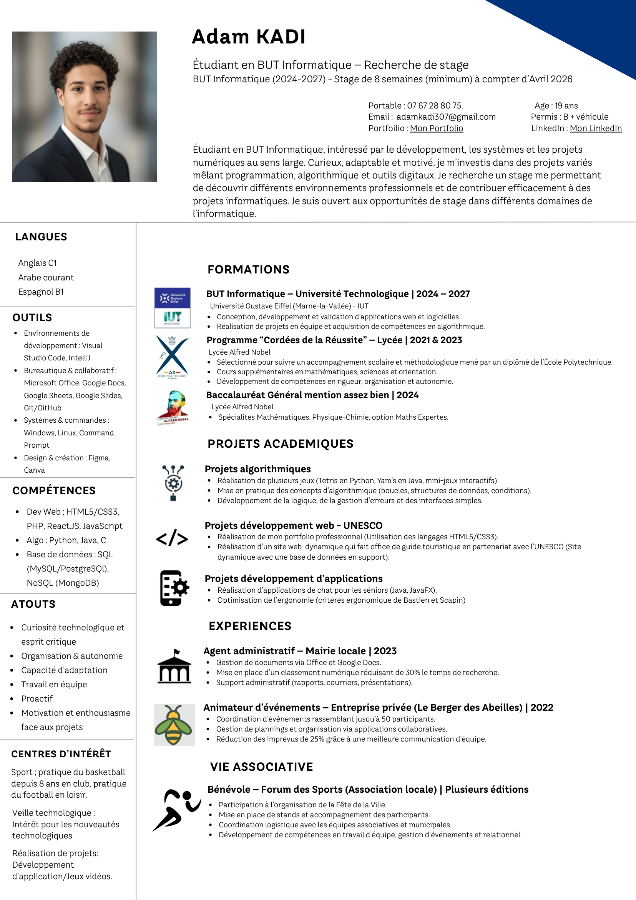

Créer des solutions utiles
J'apprécie l'informatique parce qu'elle permet de passer d'un besoin réel à une solution concrète, structurée et utilisable.
Portfolio étudiant • BUT Informatique • Développement logiciel & web
BUT Informatique • Développement logiciel, web et projets techniques
Je construis des projets web, logiciels et techniques en cherchant un point d'équilibre entre code propre, logique métier claire et travail d'équipe efficace.
À propos
Je suis étudiant en BUT Informatique à l'Université Gustave Eiffel et je me suis orienté vers l'informatique parce que j'aime comprendre comment fonctionnent les systèmes, résoudre des problèmes concrets et transformer des idées en outils utiles. Ce qui me motive le plus, c'est le fait de pouvoir construire des applications, améliorer une solution existante et apprendre en continu sur des sujets à la fois techniques et pratiques.
J'apprécie l'informatique parce qu'elle permet de passer d'un besoin réel à une solution concrète, structurée et utilisable.
Je prends autant de plaisir à développer des applications qu'à comprendre les choix techniques, l'algorithmique et le travail d'équipe.
Je cherche à avancer avec une base propre, des projets concrets et une vraie volonté de monter en niveau vers un profil développeur solide.
CV
Cette zone permet de consulter rapidement mon CV sans quitter la page, puis de télécharger la version PDF pour un rendu universitaire ou un échange plus professionnel.

Connaissances
Cette section donne une vue rapide de mes bases techniques, de mes langues de travail et des outils que je mobilise en cours et en projet.
Les langages que j'ai déjà pratiqués dans mes projets web, logiciels et techniques.
Des langues utiles pour les présentations, le travail en équipe et la lecture de ressources techniques.
Les outils que j'utilise pour coder, organiser les projets, prototyper et collaborer efficacement.
Compétences
Cette vue d'ensemble sert de point d'entrée. Les sections suivantes détaillent chaque compétence avec ses projets.
TP techniques
Cette section est prévue pour accueillir les TP de type mini-projet.
Projet phare
Canal principal pour un premier contact professionnel.
Disponible pour un échange rapide ou un suivi de candidature.
Pour suivre mon parcours et mes mises à jour professionnelles.
Paris et périphéries
Mobilité pour les projets, stages et opportunités académiques.